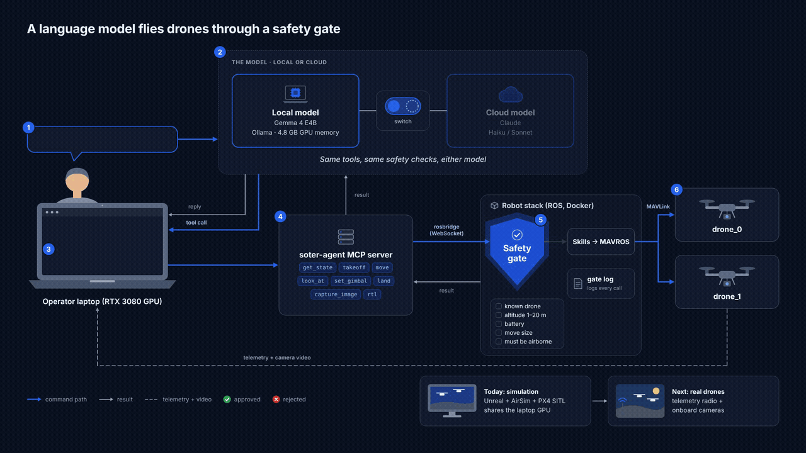
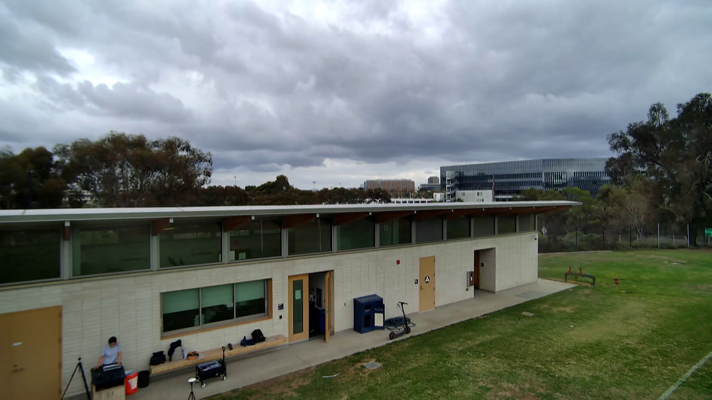
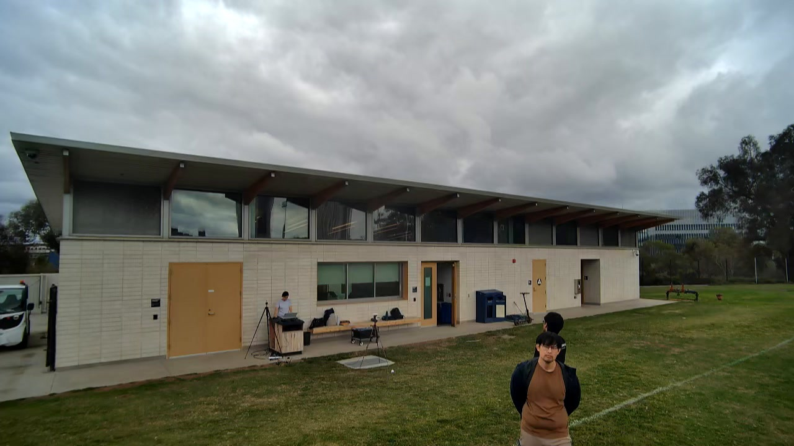

Multi-drone systems
Natural-language control for multi-drone systems
Operators issue language requests. Typed MCP tools and a deterministic safety gate turn them into constrained actions on the existing ROS/PX4 stack.
Overview
The model proposes. The gate checks. Flight software flies.
An operator works through a Python chat interface or Claude Desktop. The language model selects a typed drone capability. Before any command reaches a vehicle, a deterministic safety gate checks live state and operating limits. Approved commands go to the existing ROS and flight-control stack; rejected commands return a clear reason. Every request, decision, and result is logged.
Approach
A thin language layer over a trusted drone stack
The language model never generates motor commands or flight setpoints. It selects a capability and supplies structured arguments; deterministic code validates and executes the request.

- 01Operator prompt
- 02Python chat or Claude Desktop
- 03Typed MCP tool call
- 04Deterministic safety gate
- 05ROS skills and behavior trees
- 06PX4 / drone
Current interface
What the operator can ask for
- State
- Read drone state and telemetry.
- Flight
- Takeoff, landing, and return-to-launch.
- Motion
- Relative movement forward, backward, left, right, up, and down by a requested distance; yaw by a requested angle.
- Camera
- Gimbal pitch/yaw control, image capture, and continuous capture.
- Coordination
- Point one drone toward another using their relative positions.
- Missions
- Start, monitor, and stop existing behavior-tree missions.
The gate checks connection, airborne state, movement and altitude ranges, battery, gimbal limits, and the configured operating fence.
First real-world experiment
Two physical drones, one operator, two interfaces
The complete system was exercised with two physical drones through the custom Python chat and Claude Desktop using the same MCP tool server.
The demonstration covered takeoff and landing, directional and vertical motion, camera pitch and yaw, image capture, return-to-launch, and a coordinated command in which one drone oriented itself and its camera toward the other. Commands that did not match reported vehicle state could be rejected before reaching the flight stack.
- Two-drone takeoff and landing
- Directional and vertical movement by distance
- Camera pitch and yaw control
- Image capture from both vehicles
- One drone oriented toward the other
- Return-to-launch and telemetry feedback


Work completed
From prototype to a reproducible system
- 01Reusable skill layer
Built over the existing ROS/PX4 drone interfaces.
- 02Safety gate and audit log
Deterministic checks with JSONL request and decision records.
- 03Agent ROS service
Exposes gated skills through a single agent endpoint.
- 04Host-side MCP server
Typed schemas for each supported capability.
- 05Operator interfaces
Python chat plus Claude Desktop and Claude Code.
- 06Field validation
Simulation bring-up and a two-drone real-world experiment.
Current status
Operational in simulation and demonstrated on two real drones.
The current phase is focused on systematic evaluation, efficiency, and additional safety and verification mechanisms.